Smokers’ Insurance Preference
ataset_basic = read_csv("data/dataset_basic.csv")
dataset_basic = read_csv("data/dataset_basic.csv") %>%
mutate(
child = factor(child,levels = c(1,2),labels = c("yes","no")),
sex = factor(sex,labels = c("male","female")),
insure = factor(insure,levels = c(1,2,3,4,5,6,7),labels = c("Employer","Self-purchase","Medicare", "Medicaid/Family Health+", "Milit/CHAMPUS/Tricare", "COBRA/Other", "Uninsured")),
smoker = factor(smoker,levels = c(1,2,3),labels = c("never","current","former")),
agegroup = factor(agegroup,ordered = TRUE,labels = c("18-24yrs","25-44yrs", "45-64yrs", "65+yrs"))
) %>%
dplyr::select(insure,agegroup,smoker,bmi,child,sex)smoke_df = read_csv("data/dataset_basic.csv") %>%
dplyr::select(agegroup,smoker,everyday,numberperdaya,cost20cigarettes,generalhealth,poverty_group = imputed_povertygroup,bmi,child,sex) %>%
drop_na(smoker) %>%
mutate(
smoker_cat = case_when(
numberperdaya <= 10 ~ 1,
(numberperdaya > 10) & (numberperdaya <= 20) ~2,
numberperdaya > 20 ~ 3),
smoker_cat = factor(smoker_cat,levels = c(1,2,3),labels = c("light","normal","heavy")),
smoker = factor(smoker,levels = c(1,2,3),labels = c("never","current","former")),
smoker = fct_infreq(smoker),
agegroup = factor(agegroup,ordered = TRUE,labels = c("18-24yrs","25-44yrs", "45-64yrs", "65+yrs")),
generalhealth = factor(generalhealth,levels = c(5,4,3,2,1), labels = c("Poor","Fair","Good","Very good","Excellent")),
poverty_group = factor(poverty_group,levels = c(1,2,3,4,5),labels = c("<100% FPL","100 - <200% FPL","200 - <400% FPL","400 - <600% FPL",">600% FPL")),
everyday = factor(everyday, levels = c(1,2), labels = c("everyday smoker", "casual smoker"))
)
current_smoker = smoke_df %>% filter(smoker == "current")1. Knowledge about insurance in our dataset
Among 2941 participants in the dataset: 2582 (88%) of them are insurance holders, while 359 (12%) of them don’t have insurance cover.
Most of participants have employer-sponsored health insurance (38%), other types include Medicaid/Family Health+ (24%), Medicare (20%), Uninsured (9%), Self-purchase (6%), COBRA/Other (2%) and Milit/CHAMPUS/Tricare (1%).
Detailed introduction on each insurance type is summarized in the below table:
insurehold = read_csv("data/dataset_basic.csv") %>%
drop_na() %>%
mutate(
insuredgateway = factor(insuredgateway, levels = c(1,2), labels = c("yes", "no"))) %>%
ggplot(aes(x = insuredgateway,fill = insuredgateway))+
geom_bar()+
theme(legend.position = "none") +
labs(
x = "Hold status of insurance",
y = "Number of participants",
title = "Holding status of insurace among participants")insuretype = dataset_basic %>%
drop_na() %>%
mutate(insure = fct_infreq(insure)) %>%
ggplot(aes(x = insure,fill = insure))+
geom_bar()+
theme(legend.position = "none") +
theme(plot.title = element_text(hjust = 0.5)) +
labs(
x = "Insurance type",
y = "Number of holders",
title = "Number of holders\nin each insurance type") +
coord_flip()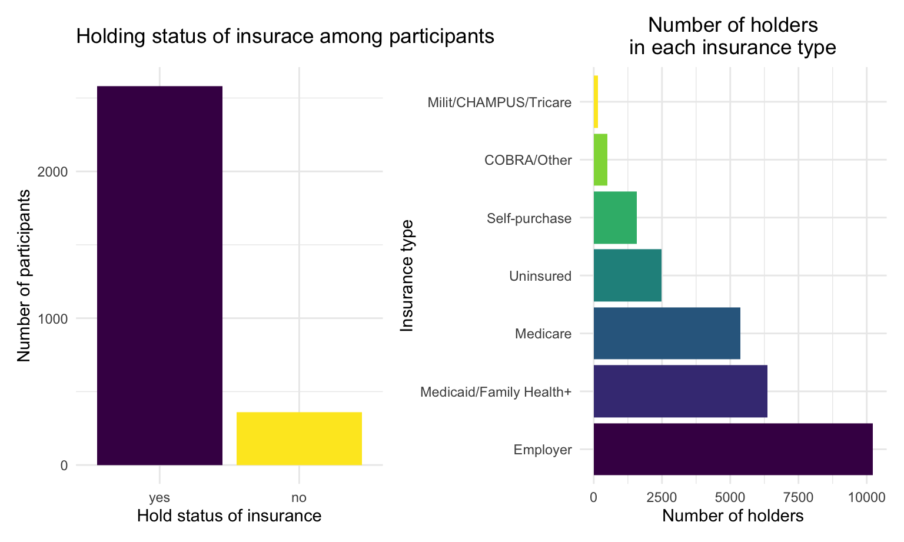
insur_type <- c("Employer", "Medicare", "Milit/CHAMPUS", "Uninsured", "Self-purchased", "Medicaid/Family Health+", "COBRA/other")
insur_meaning <- c("Employer-sponsored health insurance is a health insurance selected and purchased by your employer and offered to eligible employees and their dependents.",
"Medicare is federal health insurance for people 65 or older, some younger people with disabilities, people with End-Stage Renal Disease",
"Health Care progam for military",
"Not insured",
"Insurance purchased by individual choice",
"Medicaid/health insurance program for adults who are aged 19 to 64 who have income too high to qualify for Medicaid",
"Consolidated Omnibus Budget Reconciliation Act, which gives some employees the ability to continue health insurance coverage after leaving employment, or other types of insurance.")
insur <- data.frame(insur_type, insur_meaning) %>%
dplyr::rename(
"Insurance type" = insur_type,
"Insurance type meaning" = insur_meaning
)
knitr::kable(insur)| Insurance type | Insurance type meaning |
|---|---|
| Employer | Employer-sponsored health insurance is a health insurance selected and purchased by your employer and offered to eligible employees and their dependents. |
| Medicare | Medicare is federal health insurance for people 65 or older, some younger people with disabilities, people with End-Stage Renal Disease |
| Milit/CHAMPUS | Health Care progam for military |
| Uninsured | Not insured |
| Self-purchased | Insurance purchased by individual choice |
| Medicaid/Family Health+ | Medicaid/health insurance program for adults who are aged 19 to 64 who have income too high to qualify for Medicaid |
| COBRA/other | Consolidated Omnibus Budget Reconciliation Act, which gives some employees the ability to continue health insurance coverage after leaving employment, or other types of insurance. |
2. Knowledge regarding smoking in our dataset
Here we conduct some explorations focusing on smoking information in our data. Click on each tab to see different dimensions of smoking data.
Smoking status
Age distribution
smokegroup_count = smoke_df %>%
drop_na(smoker) %>%
dplyr::group_by(smoker) %>%
dplyr::summarize(
smokegroup_count = n()) %>%
pull()
smoke_df %>%
drop_na(agegroup) %>%
group_by(agegroup,smoker) %>%
dplyr::summarize(
age_count = n()) %>%
mutate(smokegroup_count = smokegroup_count,
age_percent = age_count/smokegroup_count)%>%
ggplot(aes(x = smoker, y = age_percent, fill = agegroup)) +
geom_bar(stat = "identity",position = "dodge") +
labs(
x = 'Smoking status',
y = 'Proportion',
title = 'Age distribution among people in different smoking status',
fill = "Age Group" )
There are a total 3652 (12%) current smokers, 6167 (21%) former smokers, and 18693 (66%) people never smoked among all the participants. Most current smokers falls in age 25 to 64 (80%). 84% of the paticipants in age 18-24 filter have never smoked.
Health self-evaluation
smoke_df %>%
drop_na(generalhealth) %>%
dplyr::group_by(generalhealth,smoker) %>%
dplyr::summarize(
count = n())%>%
mutate(smokegroup_count = smokegroup_count,
health_percent = count/smokegroup_count)%>%
ggplot(aes(x = smoker, y = health_percent, fill = generalhealth)) +
geom_bar(stat = "identity",position = "dodge") +
labs(
x = 'Smoking status',
y = 'Health self-evaluation \n(% in each types of smoker)',
title = 'Self-evaluation of health conditions among people in different smoking status\n(% in each types of smoker)',
fill = "Health status" )
Compare with other groups, current smokers have lowest proportion of excellent health status(self-evaluated).
Poverty status
smoke_df %>%
drop_na(poverty_group) %>%
dplyr::group_by(poverty_group,smoker) %>%
dplyr::summarize(
count = n()
) %>%
mutate(
smokegroup_count = smokegroup_count,
poverty_percent = count/smokegroup_count) %>%
ggplot(aes(x = smoker, y = poverty_percent, fill = poverty_group)) +
geom_bar(stat = "identity",position = "dodge") +
labs(
x = 'Smoking status',
y = 'Poverty groups\n(% in each types of smoker)',
title = 'Poverty groups (% in each types of smoker)',
fill = "Poverty Group" )Comparing to other groups, current smokers have the largest proportion of people who are <100% FPL, which means unsatisfactory financial status. They also have the least proportion of people who are >600 FPL, indicating atisfactory financial status.
BMI
smoke_df %>%
drop_na(bmi,smoker) %>%
ggplot(aes(x = smoker, y = bmi,fill = smoker)) +
geom_boxplot() +
ylim(0,50)+
labs(
x = 'Smoking status',
y = 'BMI (kg/m^2)',
title = 'The distribution of bmi among people in different smoking status') ## Warning: Removed 162 rows containing non-finite values (stat_boxplot).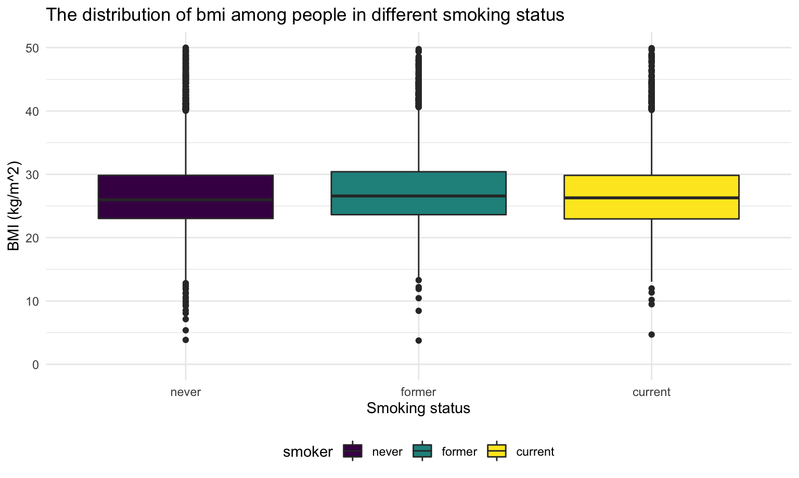
There’s no significant difference of participants BMI in different smoking status.
Current smokers
Next, we focus on the current smokers and look at there smoking intensity, frequency and cost, as well as their BMI index.
Smoking intensity and frequency
type = current_smoker %>%
ggplot(aes(x = smoker_cat, fill = everyday))+
geom_histogram(stat="count") +
labs(
x = 'Smoking intensity',
y = 'Number of current smokers',
title = 'Smoking intensity of current smokers')+
theme(legend.position = "none")consumption = current_smoker %>%
ggplot(aes(x = numberperdaya, fill = everyday)) +
geom_histogram()+
xlim(0,30)+
labs(
x = "Average number of cigarattes smoked per day",
y = "Number of current smokers",
title = "Average number of cigarattes\nsmoked per day",
fill = "Smoking frequency"
)+
theme(legend.position = "right")Most of the current smokers are light smokers. Among those light smokers, nearly half of them smoke everyday, while normal and heavy smokers are more likely to smoke everyday. Casual smokers tend to consume less cigarette than everyday smokers.
BMI
current_smoker %>%
ggplot(aes(x = smoker_cat, y = bmi, fill = smoker_cat))+
geom_boxplot() +
theme(plot.title = element_text(hjust = 0.5)) +
ylim(0,50)+
#facet_grid(.~smoker_cat,scales = "free") +
labs(
x = 'Smoking intensity',
y = 'BMI (kg/m^2)',
title = 'BMI among current smokers with different smoking intensity',
color = "Smoking intensity")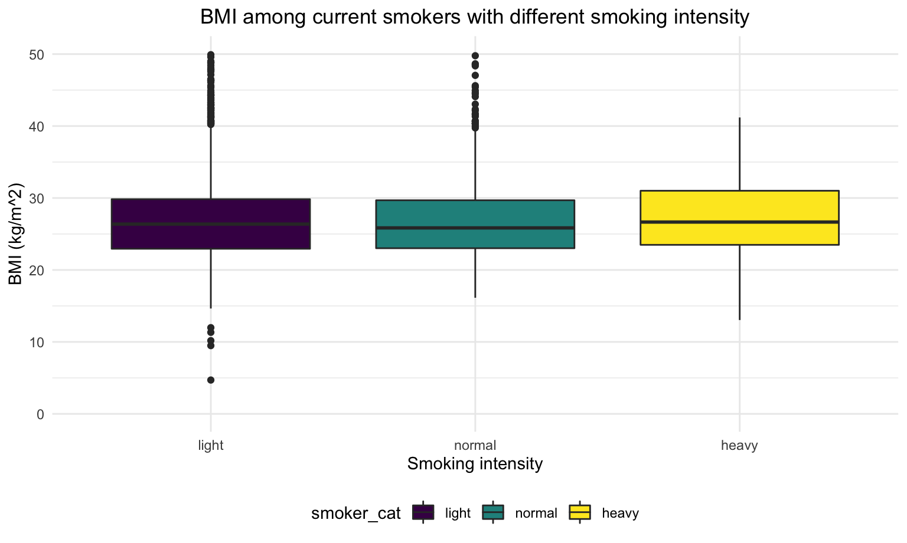
For heavy smokers, their BMI are slightly higher than light smokers and normal smokers.
Cost on smoke
current_smoker %>%
ggplot(aes(x = numberperdaya, y = cost20cigarettes,color = everyday))+
geom_point(alpha = .5,size = 3) +
xlim(0,50)+
ylim(0,40)+
theme(plot.title = element_text(hjust = 0.5)) +
#facet_grid(.~smoker_cat,scales = "free") +
labs(
x = 'Number of cigrattes consumed everyday',
y = 'Cost of every 20 (one pack) cigrattes',
title = 'Cost of every 20 (one pack) cigrattes\nfor number of cigrattes consumed everyday',
color = "Smoking frequency")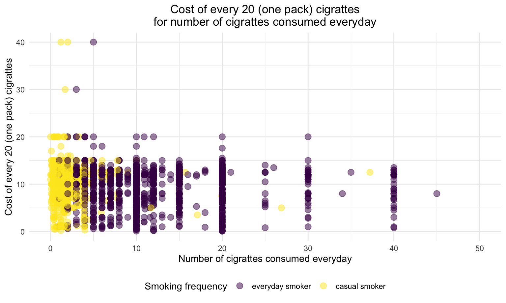
Regardless of smoking frequency and smoking intensity, the cost of each pack of cigarette are even distributed within $0 to $20
3. Explore relationship between insurance and target variables
In this step, we want to explore more about the relationship between insurance and key variables, including smoking, age, have children or not and BMI. We start by plotting distribution graphs to see the pattern between each groups. And then we conduct statistical tests to evaluate the association and similarity between them.
Distributions
Smoking
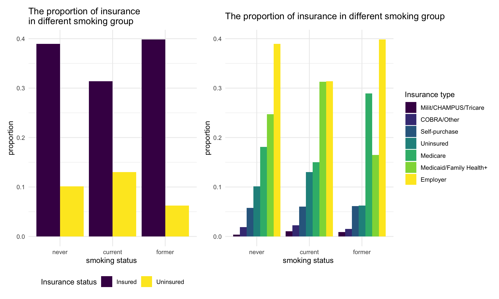
We found that, current smokers have the highest uninsured proportion comparing to other groups.
Regardless of the smoking status, most people tend to get employer insurance. For former smokers, a larger proportion of them get the medicare insurance compare to people who never smoke or currently smoke.
Age
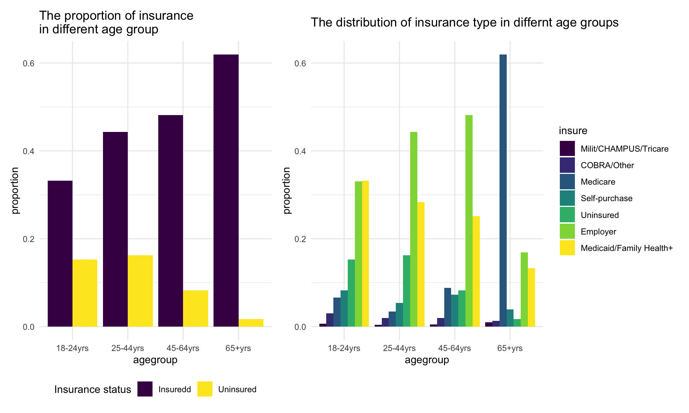 For person younger than 65 years old, people tend to get insurance as age increase. Specifically, for those age in the range of 25-64 years old, high proportion of them get employer insurance since they are in working age.
For person older than 65 years old, most of them get Medicare since Medicare is only provided for people above 65 years old.
Have children or not
We found that for those without children, a larger proportion of them get Medicare comparing to those with children.
BMI
analyse_bmi_insurancetype =
dataset_basic %>%
drop_na(bmi,insure)
uninsure = analyse_bmi_insurancetype %>%
mutate(insure = ifelse(insure == "Uninsured", "Uninsured", "Insuredd"))
bmi_plot1 =
analyse_bmi_insurancetype %>%
ggplot(aes(x = insure, y = bmi,fill = insure)) +
geom_boxplot(alpha = 0.6) +
theme(legend.position = "none") +
scale_fill_brewer(palette = "Dark2") +
labs(
x = 'insurance',
y = 'bmi',
title = 'The distribution of bmi in groups\nhaving different insurance type') +
coord_flip()
bmi_plot2 =
uninsure %>%
ggplot(aes(x = insure , y = bmi, fill = insure)) +
geom_boxplot(alpha = 0.6) +
theme(legend.position = "none") +
scale_fill_brewer(palette = "Dark2") +
labs(
x = 'have insurance or not',
y = 'bmi',
title = 'The distribution of bmi in groups\nhaving insurance or not') +
coord_flip()
bmi_plot2 + bmi_plot1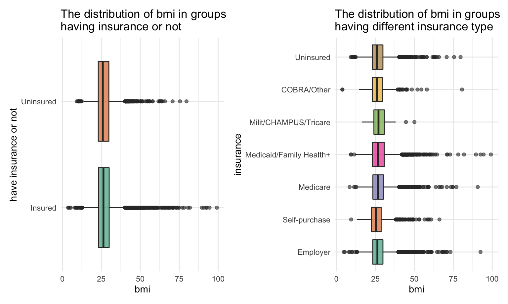
We did not observe significant difference between each group.
Statistical test
Smoking
Chi-quare test between insurance type and smoking
\(H_0\) : insurance type and smoking are independent, there is no relationship between the two categorical variables.
\(H_1\) : insurance type and smoking are dependent, there is a relationship between the two categorical variables.
Test result:
dat =
dataset_basic %>%
drop_na(smoker,insure) 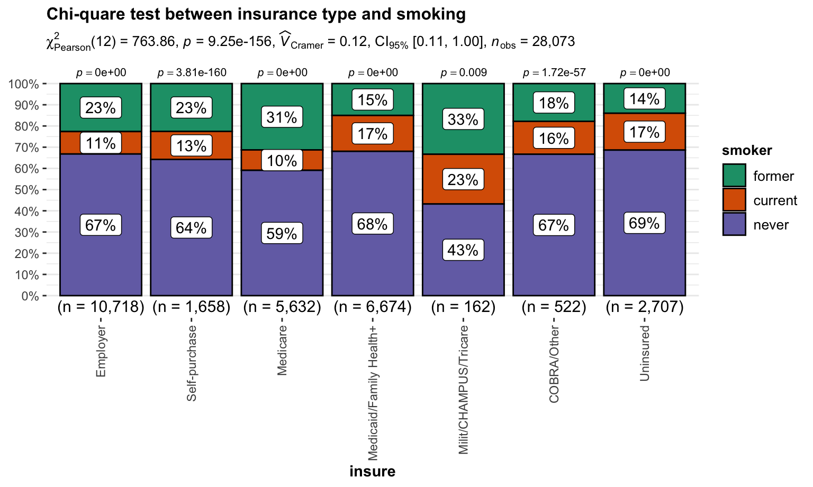
We reject \(H_0\) and then conclude that insurance type and smoking are dependent.
Age
Chi-quare test between insurance type and age
\(H_0\) : insurance type and age are independent, there is no relationship between the two categorical variables.
\(H_1\) : insurance type and age are dependent, there is a relationship between the two categorical variables.
Test result:
dat =
dataset_basic %>%
drop_na(agegroup,insure) 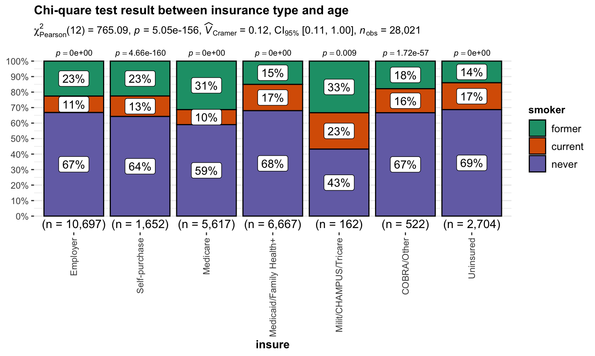
We reject \(H_0\) and then conclude that insurance type and age are dependent.
Have children or not
Chi-quare test between insurance type and children
\(H_0\) : insurance type and have children or not are independent, there is no relationship between the two categorical variables.
\(H_1\) : insurance type and have children or not are dependent, there is a relationship between the two categorical variables.
Test result:
#test_data_smoke_insurancetype = analyse_smoke_insurancetype %>%
# pivot_wider(
# names_from = "Insured",
# values_from = "n")
#test_data_smoke_insurancetype %>% knitr::kable()
#chisq.test(test_data_smoke_insurancetype[-1])
dat =
dataset_basic %>%
drop_na(child,insure)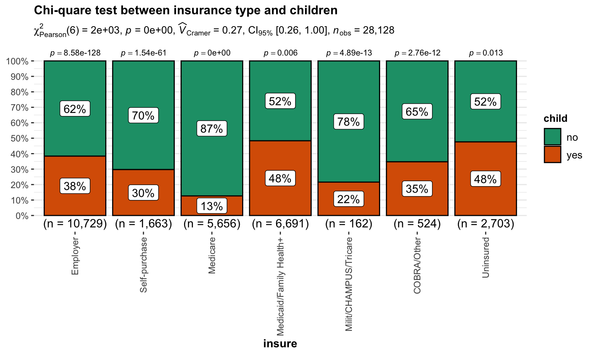
We reject \(H_0\) and then conclude that insurance type and children are dependent.
BMI
ANOVA test between insurance type and BMI
\(H_0\) : The mean of BMI in each insurance type groups are the same
\(H_1\) : At least two means of BMI in all insurance type groups are different
Test result:
| term | df | sumsq | meansq | statistic | p.value |
|---|---|---|---|---|---|
| insure | 6 | 2435.492 | 405.9154 | 10.88312 | 0 |
| Residuals | 26917 | 1003942.322 | 37.2977 | NA | NA |
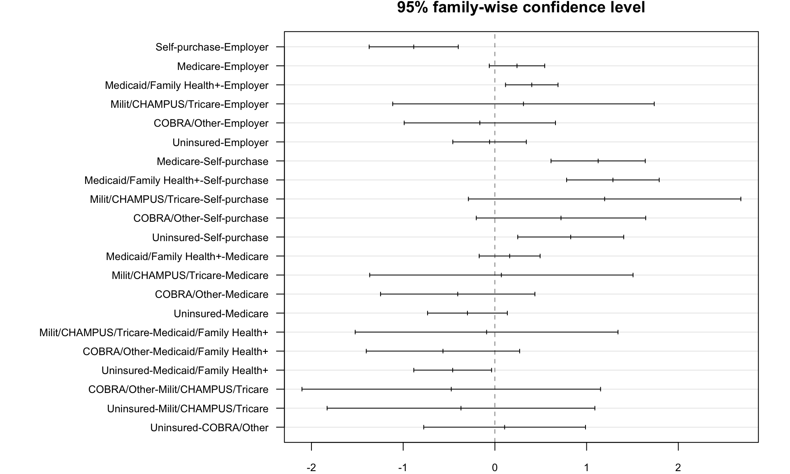
According to the ANOVA test, we reject \(H_0\) and conclude At least two means of BMI in all insurance type groups are different. Detailed information of the difference in each group can be seen on the above image.